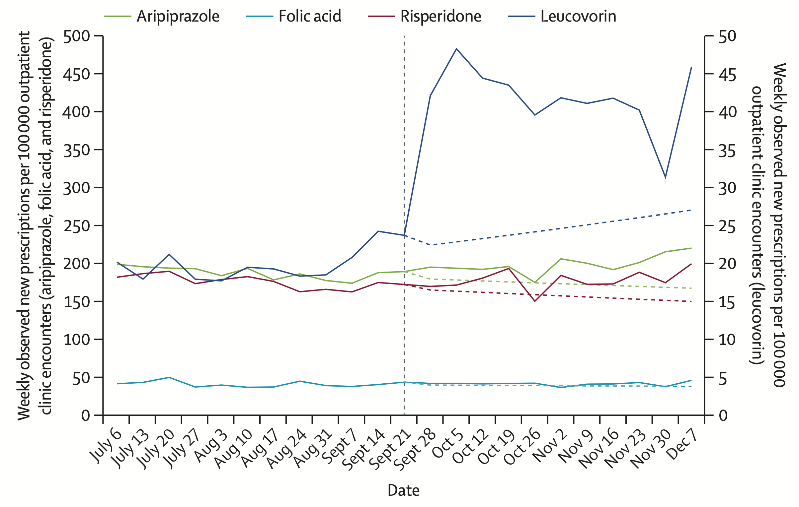
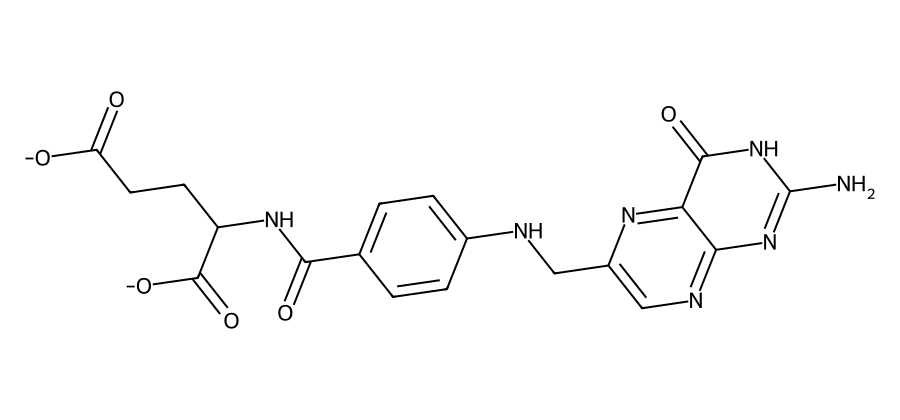
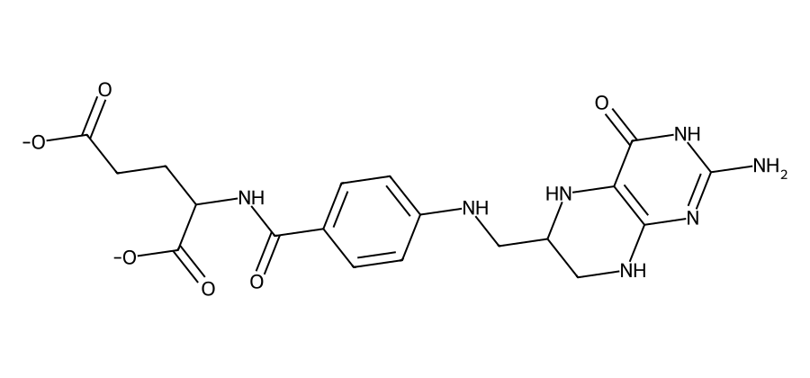
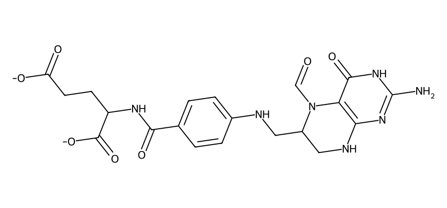
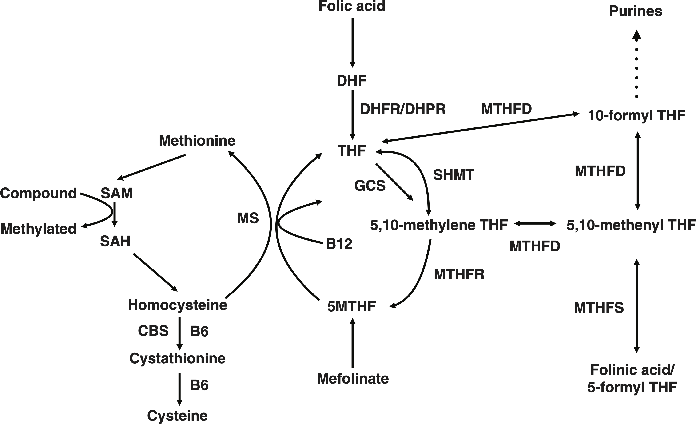
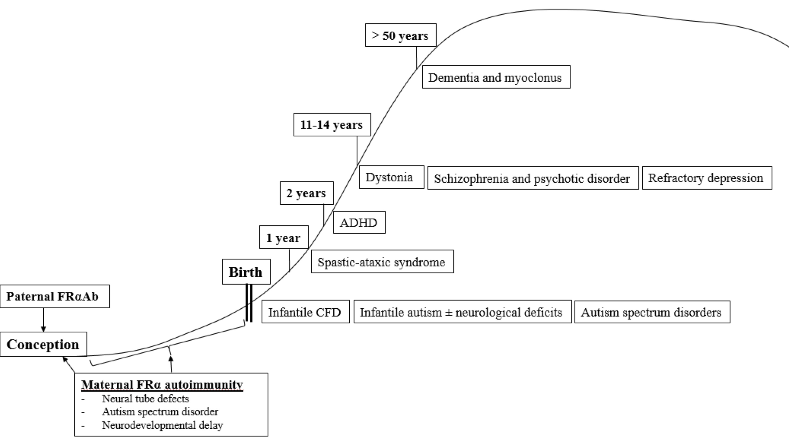

Cerebral folatmangel
Per T.K. Flemmen
Seksjon for medfødte metabolske sykdommer
Avdeling for medisinsk biokjemi
22. april 2026

Disposisjon
Hva er folat?
Forvirrende folater
folsyre ⇌ folat
folinsyre (hist.)
folinsyre ⇌ folinat
folininsyre (hist.)
leucovorin (amer.)
De er alle vitamin B₉!
Eller folater, om du vil.
Eller folat, hvis du absolutt insisterer.
Omfolatelse…
Folsyre ≠ folinsyre
Folater
Folat

Tetrahydrofolat (THF)

Et redusert folat.
5-metyltetrahydrofolat (5-MTHF)
Det dominerende folatet i plasma og spinalvæske.
5-formyltetrahydrofolat (folinat)

Biologisk aktive folater er reduserte – folsyre er ikke
Hvorfor trenger vi folater?
Funksjoner
- Metyleringsreaksjoner (> 100 ulike)
- DNA-metylering (genregulering)
- Basisk myelinprotein (MBP)
- Homocystein → metionin
- Purin- og pyrimidinsyntese
- DNA-syntese m.m.
Transport av folater
Det er komplisert…
- Samspill mellom (minst) fire ulike transportere
- Proton-coupled folate transporter (PCFT)
- Reduced folate carrier (RFC)
- Folate receptor α (FRα)
- Folate receptor β (FRβ)
Cerebralt opptak av ikke-reduserte folater trenger FRα
Omsetning av folater
Folatmetabolismen
- DHFR «aktiverer» folsyre
- Kjent fra metotreksat, trimetoprim
- MTHFS «aktiverer» folinsyre
- MTHFR danner 5-MTHF
- 5-MTHF → metyleringsreaksjoner
- 5,10-metylen-THF → pyrimidiner
- 10-formyl-THF → puriner

Cerebral folatmangel
Definisjon
- Cerebral folate deficiency (CFD)
- Opprinnelig: ↓ Sp-5-MTHF + normal perifer folatstatus
- Løsere bruk: ↓ Sp-5-MTHF (uavhengig av øvrig folatstatus)
Symptomer og funn
Systemisk mangel
- Megaloblastisk anemi
- Munnsår
Cerebral mangel
- Mikrocefali
- Forsinket utvikling, tap av ferdigheter
- Epilepsi
- Ataksi, dystoni eller spastisitet
- Autistiske trekk eller irritabilitet
- Forsinket myelinisering (MR-funn)
Primær CFD
| Sykdom | Klinikk | Biokjemi | Behandling |
|---|---|---|---|
| MTHFR-mangel | Apné, epilepsi, mikrocefali, hypotoni, ataksi | ↓ Sp-5-MTHF ↓–n P-Folat ↑ P-Hcy, ↓ P-Met |
5-MTHF/folinsyre + betain + metionin + B12 |
| DHFR-mangel | Megaloblastisk anemi, mikrocefali, epilepsi | ↓ Sp-5-MTHF n P-Folat |
Folinsyre |
| MTHFS-mangel | Epilepsi, hypotoni, mikrocefali | (↓) Sp-5-MTHF | 5-MTHF + Me-kobalamin ⚠️ Ikke folinsyre |
| FRα-mangel | Forsinket (motorisk) utvikling, spastisk paraplegi, ataksi, myoklon epilepsi, autistiske trekk | ↓ Sp-5-MTHF | Folinsyre ⚠️ Ikke folsyre |
Folsyre ≠ folinsyre
(folinsyre kan bruke RFC)
MTHFR
- MTHFR-mangel er vanligste IMD i folatmetabolismen (> 200 pasienter)
- MTHFR-polymorfismer med redusert aktivitet er vanlige i befolkningen generelt
- c.665C>T (C677T) assosiert med ↑ Hcy i heterozygoti
- c.1286A>C (A1298C) assosiert med ↑ Hcy i homozygoti
- Hver av disse har ~11–13,5 % homozygote europeere
- Genotyper med ↑ Hcy kalles tidvis ‘mangel’ uavhengig av grad
- Bør da skille mellom alvorlig og mild mangel
Sekundær CFD
- Systemisk folatmangel: diett, tarmsykdom
- ⚠️ MTHFR-polymorfisme
- Medikamenter
- Langvarig levodopa-karbidopa
- Antiepileptika (fenytoin, karbamazepin, valproat ++)
- ⚠️ CFD-pasienter med epilepsi
- Metotreksat og trimetoprim (DHFR)
- Mitokondriesykdommer og andre IMD (f.eks. serinsyntesedefekter)
- Autoantistoffer mot FRα (FRAA)
FRAA og CFD
- Ramaekers VT, N Blau. Develop Med Child Neuro. (2004): Idiopatisk cerebral folatmangel
- ↓ Sp-5-MTHF, normal sekvensering av FOLR1 (FRα)
- Ramaekers VT et al. NEJM (2005): Autoantistoffer ved idiopatisk CFD
- 28 barn m/CFD, 28 friske kontroller, 41 pasienter m/annen nevrologisk sydom
- Blokkerende FRα-antistoffer (FRAA) i 25/28 av CFD-pasienter, ingen av de andre
FRAA og vanlige folks tur
- Første studier hadde CFD som inklusjonskriterium
- ↓ Sp-5-MTHF og flere klassiske (alvorlige) symptomer
- Senere målt FRAA i en rekke tilstander
- Schizofreni, depresjon, ADHD, autisme ++
Autisme og CFD
Hva sier evidensen?
På den ene side
- FRAA hos 50–70 % av pasienter med ASD
- FRAA negativt korrelert med Sp-5-MTHF
- Lavere perinatalt folattilskudd forbundet med ASD
- MTHFR c.665C>T (C677T): økt effekt av perinatalt folat, økt effekt av folinsyre ved autisme
- RCT har vist effekt av folinsyre
På den annen side
- FRAA påvist i mange tilstander og fluktuerer
- Det er Sp-5-MTHF også, uten klar sammenheng med symptombyrde
- Høyere perinatalt folattilskudd forbundet med ASD
- Studien m/økt effekt av folinsyre ved c.665C>T undersøkte mye, fant lite
- Største RCT-en (av 3–4) trukket tilbake (fant ikke effekt ved reanalyse)
- FRAA → CFD → autisme, schizofreni ++ er kun påvist av én gruppe forskere

FRAA og CFD kan være epifenomener ved nevrologisk sykdom
Amerikanske fagmiljøer
- American Academy of Pediatrics (APA)
- Ikke evidens for folinsyre uten CFD
- Hvis mulig CFD, vurdér Sp-5-MTHF eller genetikk (ikke MTHFR-polymorfismer)
- Ikke legg for mye vekt på FRAA
- Society for Inherited Metabolic Disorders (SIMD)
- Diagnostisk testing av alle med ASD for å avgjøre behandling
- Spesifiserer ikke testene, men viser til «tradisjonell» ressurs
- Food and Drug Administration (FDA)
- Indikasjonen gjelder CFD
- Flere studier trengs før godkjenning for CFD med FRAA
FRAA i Norge
- Lab1 AS eneste tilbyder
- Gir ikke eksplisitte indikasjoner
- Nevner CFD, ASD, schizofreni, depresjon og nevralrørsdefekter
- «kan ikke benyttes til å stille diagnose»
- 5 950 kr
- Gir ikke eksplisitte indikasjoner
Prøvetaking
Indikasjoner for Sp-5-MTHF
- Suspekte symptomer eller funn bør senke terskel for spinalpunksjon
- Forsinket utvikling + epilepsi og negativ øvrig utredning → vurdere nevrotransmittere generelt
- Skal man uansett spinalpunktere, ta med en boks med tørris
Prøvetaking for Sp-5-MTHF
- 0,5 mL (= 10 dråper) spinalvæske
- Glass uten tilsetning
- Unngå blødning (unngå fraksjon 1)
- Hvis blod: sentrifuger umiddelbart, overfør klar væske til nytt glass
- Skriv på prøvetidspunkt og fraksjonsnummer
- Sett umiddelbart på tørris
- Send frosset, notér ev. stikkblødning på rekvisisjonen
Ved fullt nevrotransmitterpanel blir det mer komplisert, se ous.labfag.no
Prøvetaking for full pakke
Behandling ved MTHFR-polymorfismer
Etter Kiarash Tazmini
- Folsyre 1–2 mg × 1
- Noen klarer seg med økt folat i kosten
- P-Folat må ofte > 45 nmol/L (RI > 7 nmol/L)
- Kontroll P-Homocystein (Hcy) ca. hver 3. måned
- Normalisert Hcy → fastlege for årlige kontroller: folat, Hcy, kreatinin (Hb, B12, MMA)